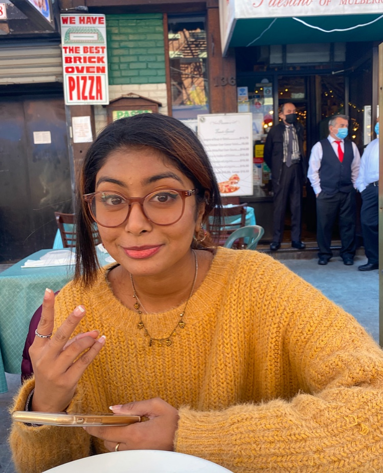
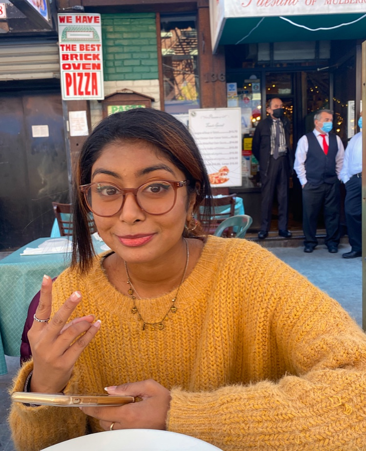

September 8th is my birthday!! It was a Tuesday so I still had school but it was only two classes so it was all good. I spent the day at my best friend, Sharmin's house. We went to all of our classes together but did we pay attention? Of course not! I was opening gifts and we were just talking and playing games. After our classes we ate lunch that her mom cooked (it was so good!) and watched the office. For the rest of the day we chilled, took selfies, and played monopoly.


This was the Saturday after my birthday so I spent the day celebrating out with my two friends, Sharmin and Mahrukh. This day had a packed schedule but it was super fun. First we all met up at the bus stop and the first place we went was psychic readings by Vienna. None of us believed in psychic readings but we thought it would be fun. When we got there, we started to get a little scared but the woman was very nice. Mahrukh was too scared to get a reading so only Sharmin and I did it. Sharmin got a palm reading and I got a face reading. When we left, I wrote the fortune down in my notes just so I could look back at it and see if anything she said really did happen. The next thing we had to do was go to a tattoo shop. Since I was now 18, it was no longer illegal for me to get a tattoo! I made an appointment at sunset park tattoo studio so after the psychic reading, we took the train to the tattoo studio. On the way, we had a small photoshoot in the train and train station. We still had time so we decided to get food before the tattoo. Sharmin and I got tacos and Mahrukh got a burrito. To be honest, the food was not that good (the radishes were the best part!). Finally it was time for the tattoo. I got the word "8TEEN" on the middle of my back. It was a very quick process and it didn't hurt at all! After the tattoo we went for dessert at J Petal, a place that sells Japanese crepes and Thai ice cream. We all got ice cream and went to sunset park to eat it. We spread a blanket, chilled, took selfies, and just talked. Then we all took the bus home and rested because it was a fun but busy day!!


October 17th is Sharmin's birthday!! Her birthday conveniently fell on a Saturday so we were able to hang out. First we took the train to Paesano, an Italian restaurant. Their food was really good, I highly reccommend. The restaurant was near Washington Square Park so we walked there to take photos and relax. When we got there, there was a dog park so I had to stand and watch the cute doggies for a good 5 minutes!! Then we got to the middle of the park and took photos. After that, we found a nice bench and just sat and talked. Then we went to La NewYorkina, an ice cream shop. We both got chocolate ice cream! We then took the train home and chilled.

 

I voted for the first time!! My mom, brother and I decided to vote early. When we got to our voting site the line was about 5 blocks long! I was ready to go back home but my mom made me stay because she said the line would be that long everyday. Half way through the 5 blocks, I called Sharmin and told her to come join us in the line so she wouldn't have to wait too long. And also to bring water and snacks :) When she got there, we were only one block away. It was about a 2 hour wait in total! Once we got in the voting site, we had to show our IDs and get the ballot. Then we went to the little booths to bubble in our answers. We handed in the completed ballots and that was it! We had just voted!! It was a very simple and easy process and the 2 hours wait time was definitely worth it.

This day, my now boyfriend, Tanmoy, and I hung out. We were just friends at the time and were meeting for the first time. We met up at the train station and walked to Hudson River Park where we just killed time by walking and talking. I must say, we vibed really well and I already knew it was going to be a good day. We had tickets to the Whitney Museum of American Art for 12:15pm so when the time came we headed over there. I was an interesting museum that had all kinds of art, some of which we appreciated and some, well not really. Later that day we also had reserved a time to walk the highline. I've always wanted to walk the highline and surprisingly, so did he! It was long but calming and peaceful walk. We talked about literally everything! At the end of the highline is Hudson Yards. We went to Hudson Yards Mall, visited some stores, and bought food at Shake Shack. We ate the food outside and after some more strolling around, we went home.
Sharmin came over to help with Thanksgiving preps and to help put up the Christmas tree on this day!